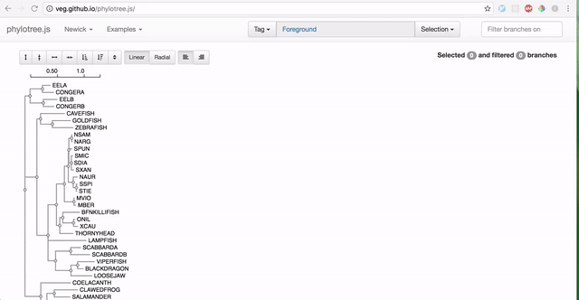

HyPhy v2.3 Quick Start#
If you do not have a dataset to work with, you might find it convenient to download the zip file
Installation#
Warning : This is for the development branch of HyPhy!
Dependencies#
- cmake > 3.0
Commands#
git clone git@github.com:veg/hyphy.git cd hyphy git checkout v2.3-dev cmake . make HYPHYMP
Now let's just make sure that the installation was successful
./HYPHYMP LIBPATH=`pwd`/res ./tests/hbltests/libv3/math.bf
Should result in the following output
{
"Count":4,
"Mean":2.25,
"Median":2,
"Min":1,
"Max":4,
"2.5%":1,
"97.5%":4,
"Sum":9,
"Std.Dev":1.089724735885168,
"Variance":1.1875,
"COV":0.4843221048378527,
"Skewness":0.6520236646847543,
"Kurtosis":2.096952908587258,
"Sq. sum":18,
"Non-negative":4
}
RELAX - Compare Selective Pressures on Different Parts of the Tree#
RELAX is a method described in Wertheim et al. It is based on the BS-REL model branch site framework, but the tree is partitioned (a priori) into non-overlapping sets of branches, and the separate distributions of ω are fitted to each set and compared for relative relaxation (ω values contract to 1) or intensification (ω values move away from 1).
- You can try RELAX via Datamonkey
- Please visit Dr. Pond's tutorial for an in-depth overview of conducting an analysis.
Use the phylotree application to select donor and recipient branches#
Visit phylotree.js with your newick file ready.

Run the following command from within the HYPHY directory#
./HYPHYMP LIBPATH=`pwd`/res res/TemplateBatchFiles/SelectionAnalyses/RELAX.bf
and answer the prompts.
Alternatively, you couple pipe the arguments into HyPhy
(echo 1; echo <path to sequence file>; echo <path to tree file>; echo 3; echo 2;echo 1) | ./HYPHYMP LIBPATH=`pwd`/res res/TemplateBatchFiles/SelectionAnalyses/RELAX.bf
with <path to sequence file> and <path to tree file> being the absolute paths.
Explanation
1- Select the Universal Code<path to sequence file>- the filename of the multiple sequence alignment<path to sequence file>- the filename of the newick tree3- Selects tagged partition for testing relaxed selection2- Selects tagged partition for reference branches1- Fits descriptive models and run the relax test (4 models) as opposed to a minimal RELAX test (2 models)
Please note that if there is a tree defined within the NEXUS file, HyPhy will use the defined tree and not prompt for an additional file.
Once the RELAX job is running, please go ahead and relax yourself for a moment.
Once the RELAX job is completed, there will be a file that is generated in the
same directory as the sequence file named <sequence file>.RELAX.json.
The file is standard JSON, and can be parsed with any programming language. For something a bit more human readable, you can visit this page to view your results.
BUSTED - Alignment-wide tests for episodic diversification#
BUSTED is a method described in Murrell et al. It has been extensively tested and shows better power and accuracy than either "branch-site" models in PAML, or the "covarion" style models
- You can try BUSTED via Datamonkey
- Please visit Dr. Pond's tutorial for an in-depth overview of conducting an analysis.
Visit phylotree.js with your newick file ready.

Run the following command from within the HYPHY directory#
./HYPHYMP LIBPATH=`pwd`/res res/TemplateBatchFiles/SelectionAnalyses/BUSTED.bf
and answer the prompts
Alternatively, you couple pipe the arguments into HyPhy
(echo 1; echo <path to sequence file>; echo <path to tree file>; echo 4; echo d) | ./HYPHYMP LIBPATH=`pwd`/res res/TemplateBatchFiles/SelectionAnalyses/RELAX.bf
Explanation
1- Selects the Universal Genetic Code.<path to sequence file>- the filename of the multiple sequence alignment<path to sequence file>- the filename of the newick tree4- Sets Foreground to test on all branches labeled with {Foreground} jointlyd- Completes the selection
Please note that if there is a tree defined within the NEXUS file, HyPhy will use the defined tree and not prompt for an additional file.
Once the BUSTED job is completed, there will be a file that is generated in the
same directory as the sequence file named <sequence file>.BUSTED.json.
The file is standard JSON, and can be parsed with any programming language. For something a bit more human readable, you can visit this page to view your results.
FEL - Fixed Effects Model for detecting site-wise selective pressure#
FEL (Fixed Effects Likelihood), as described in Sergei L Kosakovsky Pond and Simon DW Frost, estimates site-wise synonymous (α) and non-synonymous (β) rates, and uses a likelihood ratio test to determine if beta &neq; alpha at a site. The estimates aggregate information over all branches, so the signal is derived from pervasive diversification or conservation.
- You can try FEL via Datamonkey
./HYPHYMP LIBPATH=`pwd`/res res/TemplateBatchFiles/SelectionAnalyses/FEL.bf
and answer the prompts
Alternatively, you couple pipe the arguments into HyPhy
(echo 1; echo <path to sequence file>; echo <path to tree file>; echo 1; echo 0.1) | ./HYPHYMP LIBPATH=`pwd`/res res/TemplateBatchFiles/SelectionAnalyses/FEL.bf
Explanation
1- Selects the Universal Genetic Code.<path to sequence file>- the filename of the multiple sequence alignment<path to sequence file>- the filename of the newick tree1- Include all branches in the analysis0.1- The p-value threshold
Please note that if there is a tree defined within the NEXUS file, HyPhy will use the defined tree and not prompt for an additional file.
Please note that FEL is an MPI-aware script. You are free to use HYPHYMPI in conjunction with mpirun on computing clusters for improved performance.